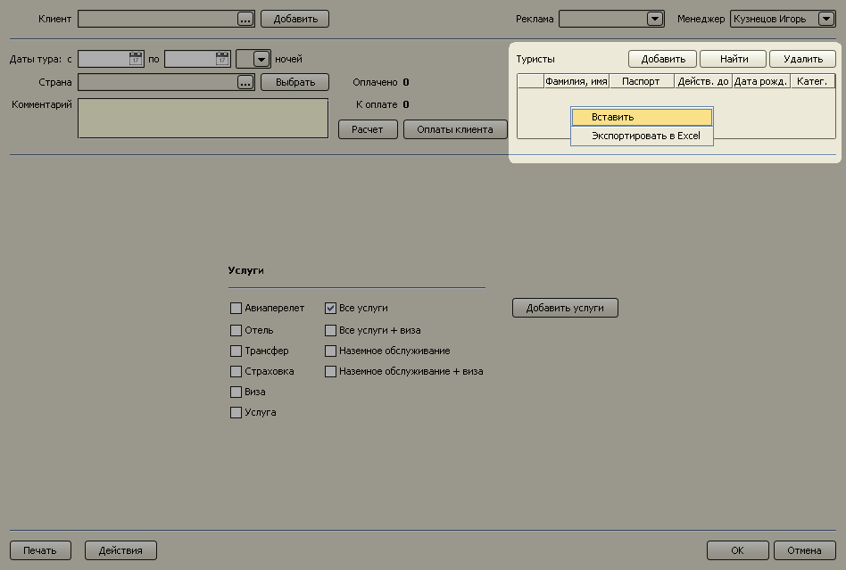
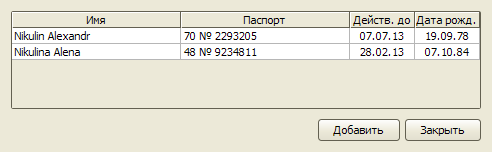
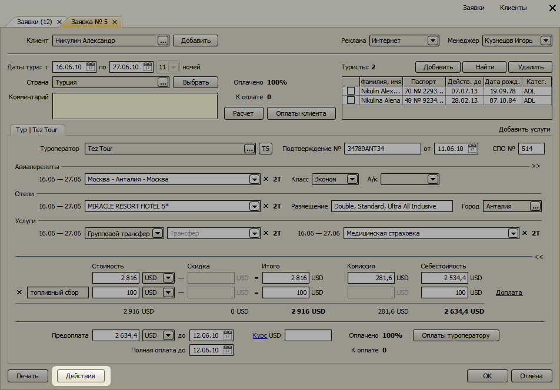
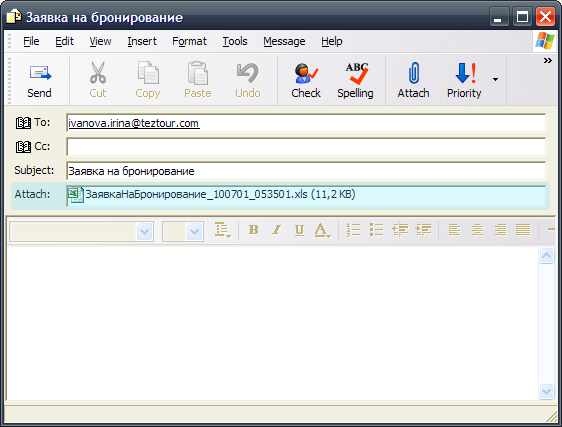

Изменения в версии 1.1
- Получение внутреннего курса валют туроператоров
- Импорт списка туристов в заявку
- Отправка заявки на бронирование по e-mail
- Расчет суммы "К оплате" в рублях
Получение внутреннего курса валют туроператоров
Для следующих туроператоров имеется возможность автоматически вносить внутренний
курс туроператора в заявку:
- ITC
- Амиго-Турс
- Ascent Travel
- Библио-глобус
- Время-тур
- Capital Tour
- DVM Tour
- Mostravel
- Natalie Tours
- Vam Tour
- Mousenidis Travel
- Pegas Touristik
- Space Travel
- Tez Tour
В следующем обновлении программы список поддерживаемых туроператоров будет расширен.
Для того чтобы воспользоваться данной функцией, необходимо ввести реестровый номер
туроператора в справочнике туроператоров.

В заявке появится синяя ссылка на слове "Курс". Если ее нажать, появится меню для
выбора дня действия внутреннего курса (сегодня или завтра).

Выберите нужный день – начнется загрузка внутреннего курса с сайта туроператора.

Если загрузка закончилась успешно, в поле "Курс USD" появится значение внутреннего
курса валюты у данного туроператора на выбранный день.

Импорт списка туристов в заявку
Данная функция позволяет добавлять данные туристов в заявку, скопировав их в
буфер обмена из письма, текстового документа, таблицы Excel. Программа распознает
фамилии и имена туристов, даты рождений, номера, сроки действия паспортов и
вносит эти данные в таблицу туристов в заявке.
Например, у нас записаны данные туристов в текстовом файле:
Nikulin Alexandr 70 № 2293205 07.07.2013 19.09.1978
Nikulina Alena 48 № 9234811 28.02.2013 07.10.1984
Выделяем их и копируем в буфер обмена. В заявке нажимаем правую
кнопку мыши на таблице туристов. В появившемся контекстном меню выбираем пункт
"Вставить".

Появится таблица предпросмотра результата распознавания.

В этой таблице можно скорректировать данные туристов, если распознавание прошло
с ошибками. При нажатии на кнопку "Добавить" информация о туристах будет внесена в
заявку.
Механизм импорта имеет следующие ограничения:
- данные каждого туриста должны находится в различных строках (текстового документа
или таблицы Excel), - фамилии и имена туристов должны быть на английском языке,
- даты дней рождений и сроков окончания действия паспортов должны иметь следующие
форматы: дд.мм.гг, дд.мм.гггг, дд:мм:гг, дд:мм:гггг, дд/мм/гг, дд/мм/гггг, 01JUL10, 01JUL2010.
Отправка заявки на бронирование по e-mail
С помощью этой функции вы можете создать письмо для бронирования тура.
Нажмите кнопку "Действия" внизу заявки и в появившемся меню выберите пункт "Послать заявку на бронирование".

Откроется форма создания нового письма в вашем почтовом клиенте со вложенным файлом "Заявки на бронирование".

Расчет суммы "К оплате" в рублях
Если стоимость тура определена в иностранной валюте, долг клиента и задолженность перед
туроператором будут отображаться в этой валюте.

Кликнув левой кнопкой мыши на сумме "К оплате", эта сумма пересчитается в рублях
по введенному курсу туроператора.

Остались вопросы? Напишите нам на e-mail